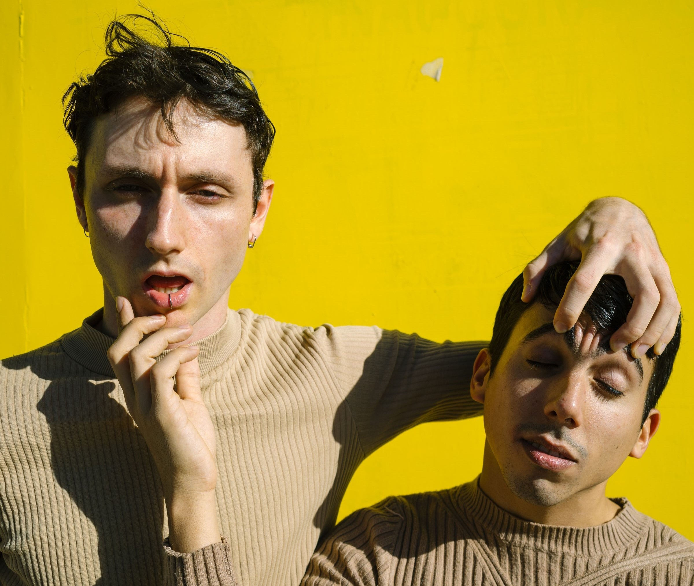

pepo & tom
Pepo & Tom son un dúo de artistas del performance radicados en la ciudad de Buenos Aires. Sus trabajos exploran la intimidad, el sentido común, el humor y las dinámicas relacionales. A traves de la creación de espacios en constante construcción buscan particulas dentro de los códigos de lenguaje masivo que puedan albergar la sutileza sensible de un mensaje subliminal.
Fueron residentes del programa anual de co-producciones situadas en Tecnopolis en 2023, ganaron la beca de creacion del FNA en 2021 como parte del colectivo Paraiso Fiscal.

SHHHH!
SHHHH! es una obra de danza contemporánea que explora la relación entre el silencio y el ruido. A través de la creación de un espacio de intimidad y silencio, los performers buscan la conexión con el público a través de la mirada y el gesto.

obra 3
Pepo & Tom, anclados en la escucha y la ausencia de palabras, caminan en torno a la Reserva Ecológica de la Costanera Sur de la Ciudad de Buenos Aires.
En búsqueda del río y de aquello que logra escapar al silencio aparecen en el camino gestualidades compartidas en el lenguaje de los ruidos. Se componen ecologías sonoras y performativas que sirven de sustrato para imprimir nuevos sentidos e imaginarios sobre las montañas de escombros. Así, la apreciación de una percepción aural de los espacios habitados, sus reverberancias y sus habitabilidades compartidas, hacen emerger sensorialidades sinestésicas que ponen entre signos de pregunta la relación entre espacio y tiempo.

iUNIVERSAL EMOUSHHHON
En una conversación desviada por el límite del silencio, se van desvelando imágenes que cristalizan funciones del cuerpo y de objetos cotidianos. Creamos un código basado en las relaciones del silencio y el ruido que buscan poner el foco en lugares inesperados. Proponiendo desde la escucha un modo de acercamiento y comunicación entre sujetos, objetos y espacios.